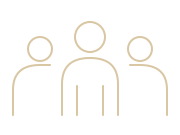

ESTALINISMO EN LA UNIÓN SOVIÉTICA / 05
Sociedad y vida cotidiana
1928–1941 · Trabajo, educación y experiencias cotidianas

Explicación del equipo · Parte 5. Abre el reproductor y pulsa reproducir.
PREGUNTA DEL MÓDULO
¿Cómo variaron las experiencias de distintos grupos sociales?
EXPLORA EL TEMA
Trabajar, aprender y vivir.
RECURSO INTERACTIVO ADICIONAL
Una sociedad, distintas perspectivas.
Compara el discurso oficial con una investigación histórica. Las descripciones son síntesis, no citas textuales.
Perspectiva y propósito
Evidencia
Límites
Referencia
FUENTES DEL MÓDULO